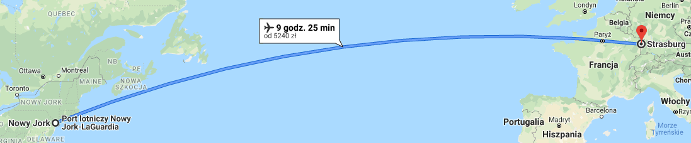
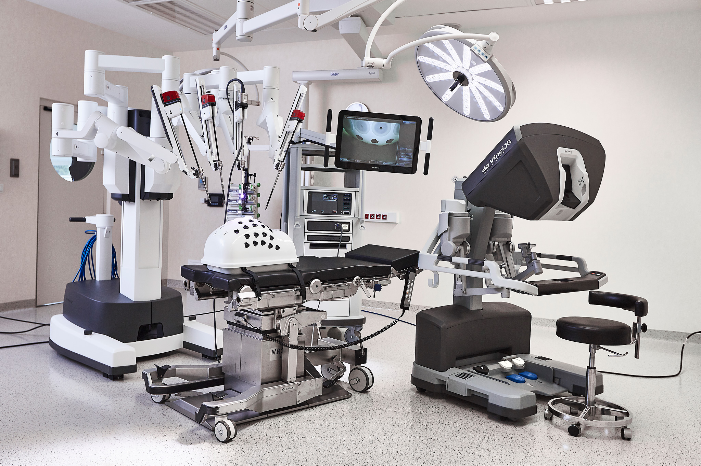
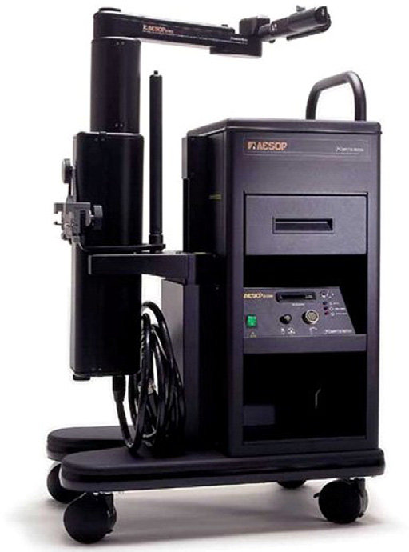
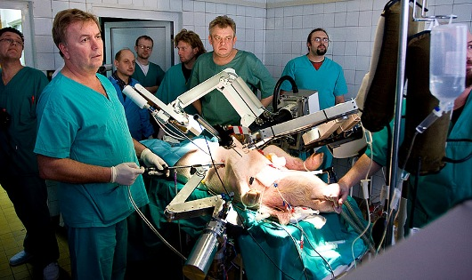

Autorzy:
Paweł Maciocha
Katarzyna Woźnica
1. Telechirurgia - co to jest?
2. Historia
3. Jak to działa?
3. Roboty medyczne
4. Gdzie jest wykorzystywana?
5. Wady telechirurgi
6. Przyszłość telechirurgii
7. Źródła
rodzaj operacji
forma telemedycyny
operacja na odległość

opóźniene wynosiło 155msRoboty zdolne do operowania
ZEUS i daVinciurządzenia typu Master-Slave

Źródło: Robot chirurgiczny da Vinci Surgical System [5]
Źródło: Robot chirurgiczny AESOP Robotic System [7]
Źródło: Robot chirurgiczny Robot Robin Heart [6][1] Źródło: https://www.surgeryencyclopedia.com/St-Wr/Telesurgery.html
[2] Źródło: https://en.wikipedia.org/wiki/Remote_surgery
[3] Źródło: https://www.ncbi.nlm.nih.gov/pmc/articles/PMC6067812/
[4] Źródło: http://www.telemedycyna.ur.edu.pl/index.php?k=telechirurgia
[5] Źródło: https://healthcaremarketexperts.com/aktualnosci/szpital-na-klinach-siodmy-w-polsce-robot-da-vinci/
[6] Źródło: http://www.asimo.pl/modele/robin.php
[9] Źródło: "Robotyka w medycynie" Zygmunt Zdrojewicz , Wojciech Witkiewicz , Anna Dołowiec , Jakub Głód
[10] Źródło: https://www.medicaldesignandoutsourcing.com/robotic-telesurgery-future-corindus/
![Przepływ informacji w systemie teleoperacyjnym [2]](https://pl.wikipedia.org/wiki/Teleoperacja#/media/Plik:Diagram_przeplywu_informacji_teleoperacje.svg){kind=link}